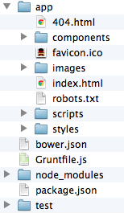

Big Wave Node
自己紹介
- 山越崇裕と申します
- jig.jp という会社から来ました
- イカちゃんとかコッシーとか呼ばれてます
普段の仕事
- hottoLINE, COPAIN といったチャットアプリの裏側作りました
- Pairin というアプリの HTML 部分を担当
社外では
- JAWS UG 勉強会
- Mashup Award 8 で企業賞
- その他、ハッカソン出現率高し
なぜ WCAF に
呼ばれたのか
- node 初期の頃、いろいろ作ってた
- twitter のタイムラインをリアルタイムマッピング
- ハッシュタグ監視ツール
多分、JS の話を期待されてる！
カミングアウト
最近 JS 触ってません
- １年くらいサーバオンリー
- Pairin が１年前
- すいません
久々に JS
復帰早々気づいたこと
node ってすげえな
やたら目にする
ブログ記事
- フロントエンドエンジニアにおけるNode.jsのススメ
やたら目にする npm
- npm install bower -g
- npm install grunt-cli -g
- npm! npm!
なんでだろう？
考えてみた
インストールしやすい
- mac なら pkg
- windows なら exe
- linux なら rpm
それぞれ公式が配布！
作ったものを配布しやすい
- node と一緒に npm が入る
- npm install tool でツールをゲット！
node の導入も楽なら、その後のツールの導入も楽
frontend エンジニアの発想
普段バリバリの JSer が不満を抱いて node でツールを作る
のるしかない
このビックウェーブに
いつのるの？
いｍ（ｒｙ
WCAF vol.10 で
俺は成長するんだ！
流行りのものや定番をいろいろ勉強
俺はやるぞ！
web サービスを
作ってみた
おことわり
プログラマー・ハイ
web サービスをゴリゴリ作る
↓
テンションが上がる
↓
かなりプログラマー向けな話題に
セッションの聞き方
- ( ´_ゝ｀)ﾌｰﾝって感じで流す
- ツール名だけでも覚える
- さっきのサービスでJSといちゃいちゃする
- うっひょー俺もコーディングしちゃうぜ
本題
やりたいこと
- 最新技術や定番を勉強したい
- シングルページアプリ作りたい
- リアルタイムなの作りたい
それぞれへの対応
- 最新技術や定番を勉強したい
- yeoman, bower, grunt, RequreJS, scss with compass
- シングルページアプリ作りたい
- knockoutjs, sammyjs
- リアルタイムなの作りたい
- socket.io
今回紹介するもの
- node 製のツール
- bower, grunt, yeoman
- frontend ライブラリ
- knockout.js
node 製のツール
yeoman

- grunt, bower と連携し RequireJS, scss with compass, coffeescript などのひな形を作成するツール
- 最新技術や定番を追うにピッタリ
あとまわし
- bower, grunt を先に説明します
bower

A package manager
for the web
- フロントエンド版 npm
- npm はあくまで node 用のライブラリを取ってくるもの
- bower は例えば jquery だったりをコマンド一発で取ってくるもの
使い方
- 黒い画面を開いて
- npm install -g bower
- bower -v でバージョン番号が出れば OK
bower コマンド
- bower install
- bower search
- bower init
- とても npm ライク
bower search
$ bower search jquery # search => s でも OK
jquery git://github.com/components/jquery.git
jquery-ui git://github.com/components/jqueryui
jquery.cookie git://github.com/carhartl/jquery-cookie.git
jquery-placeholder git://github.com/mathiasbynens/jquery-placeholder.git
...bower install
$ bower install jquery # install => i でも OK
bower cloning git://github.com/components/jquery.git
bower cached git://github.com/components/jquery.git
bower fetching jquery
bower checking out jquery#2.0.0
bower copying /Users/..a260ac7c3997f4381
bower installing jquery#2.0.0どこにインストールされた？

<script src="components/jquery/jquery.min.js"></script>一歩進んで
依存関係の解決
<script src="components/jquery/jquery.min.js"></script>- これが書かれたHTMLは、jQuery に依存している
- jQuery がないと表示できない
bower.json
bower init と叩くと、bower.json というファイルが作られる
{
"name": "myapp",
"version": "0.0.0",
"dependencies": {
"jquery": "~2.0.0"
},
"ignore": [
"**/.*",
"node_modules",
"components"
]
}bower.json
"dependencies": {
"jquery": "~2.0.0"
},dependencies : 依存
bower install
$ bower install
bower cloning git://github.com/components/jquery.git
...
bower installing jquery#2.0.0bower.json に書かれたとおりにライブラリをインストール
bower.json だけ管理すればOK
昔: この html を表示するにはこれとこれとこれが必要だから全部zipでまとめておきましたテヘペロ
今: bower 入ってる？ なら bower install と叩けば OK だよ！
これ豆な
- bower install jquery --save
- bower.json に追記してくれる
bower まとめ
まずはjqueryとかダウンロードするツールとして使ってみてください
その後、bower.json なんかに慣れていくと幸せになれると思います
GRUNT

The JavaScript Task Runner
単純作業(タスク)を JS で自動化
例）このファイルを削除してから、このファイルをコピーしてきてね
bat ファイルとかに近い
タスクの実行
grunt {タスク名} で実行
grunt hoge
タスクを作る
hoge というタスクを作る場合
grunt.registerTask('hoge', function (target) { ... });作る方は時間がないので省略
yeoman のひな形では……
- grunt build
- js を自動で 1 ファイルにくっつけて minify とか、配布用の準備
- RequireJS との連携も
- grunt test
- テストコード実行
- grunt server
- これがアツイ
grunt server (demo)
- ローカルサーバを立て、そのページを自動で開く
- ファイルの変更を監視
- coffee が変われば js 生成
- scss が変われば css 生成
- 自動でブラウザリロード
grunt まとめ
深く掘り下げにくい……時間ない
使いこなせば必ずあなたの目的にフィットするツールになるはず
grunt 勉強会とかやりたい
最後に yeoman

使い方
- npm install yo -g
- grunt, bower, compass は自分でインストールする必要がある
yo webapp

ひな形が作られる
ひな形の概要
- bower.json で bootstrap, jquery のセットアップ
- grunt 用の各種タスクが書かれた設定ファイル生成
- ディレクトリ構成をきれいに
yeoman いいところ
- 各ツールの設定ファイル生成
- grunt, bower, RequireJS などは設定ファイルを書くのが結構手間
- ディレクトリ構成考えるのも一苦労
- ひな形眺めるだけでも参考になる
yeoman 難点
- scss が必須
- こいつだけ ruby 製、 less の方が敷居は下がりそう
- あくまで、ひな形
- grunt, bower, scss, RequireJS などへの理解が求められる
frontend
ライブラリ
knockout.js

MVVM フレームワーク
え、難しそう、、
大丈夫
例えばこんなフォーム
WCAF まんじゅう!! 円
注文数:
円になります
こう書けます(HTML)
<p>WCAF まんじゅう!!
<span data-bind="text: kakaku"></span>円
</p>
<p>注文数:
<input type="text"
data-bind="value: kazu,
valueUpdate: 'afterkeydown'"/>
</p>
<p>
<span data-bind="text: kakaku() * kazu()"></span>
円になります
</p>こう書けます(JS)
var manjuViewModel = {
kakaku: ko.observable(500),
kazu: ko.observable(0)
};
ko.applyBindings(manjuViewModel);What's MVVM?
- M: モデル
- V: ビュー
- VM: ビューモデル
What's MVVM?
- M: まんじゅうの値段や個数
- V: HTML
- VM: まんじゅうとHTMLをつなぐ
- まんじゅうの値段をこことここに書いてね
- まんじゅうの個数はこのフォームと連動してね
なにがうれしい？
- まんじゅうの値段を10,000円にしたい
- M を変えればいい
- 売ってるサイトの見た目を変えたい
- V を変えればいい
分かれてるので変更が用意
knockout まとめ
- MVC, MVVM フレームワーク色々
- backbone, angular などなど
- knockoutjs は一番シンプル（だと思う）
- ピンポイントな用途でも使える
その他
(サーバとか)
さらっと流します；
express
- サーバを簡単にかけます（適当）
- ruby できる人は node 界の sinatra で通じる
node-dev
- node のコードを監視して自動リロード
- grunt server の動きを express とかのサーバでも簡単に実現するコマンド
socket.io
- websocket, xhr-polling, jsonp と様々な手段でリアルタイム通信を実現してくれる。
- クライアントがブラウザの場合、これを使わない理由があんまりない。
- ブラウザ間の互換がすごい
これ豆な
- require.js の wrap を false にしないとうまく動かない
- https://groups.google.com/forum/#!msg/requirejs/irKdpw3Gfqg/TL7SL7v7Er0J
そして
月日は流れ
ムーアチャット爆誕
まとめ
最新技術を使うのは労力がいる
でもブラウザが自動リロードした時など心がおどる
私はサービス開発が好きだ
最後に
今回のスライドについて
impress.js
html + js でできたプレゼンツール
WCAF で
あるまじき発言
- html 書くのだるいな
- 箇条書きでもかっこよくできねぇかな
- markdown から自動生成したいよね
node で作っちゃった☆
- node-markdown2impress
- 参考（perl）
これが、
### こうなります
- ドヤァ
- ドヤァ
- ドヤァこうなります
- ドヤァ
- ドヤァ
- ドヤァ
あえて言おう
このツール作ってる時間があれば
十分 keynote で用意できたさ
優秀なプログラマーは
楽をするためには
どんな苦労も厭わない
現状を改善する手段
- grunt
- bower
- knockoutjs
- etc, etc...